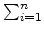
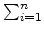

Most financial institutions had become insolvent during financial crisis
and went bankrupt or were bought by larger institutions, usually by banks.
By the end of financial crisis of all the financial institutions only two
banks still continue to operate. Financial markets had remained closed throughout
the crisis and now regulators are gradually opening them. To prevent speculation
and to gradually ramp up trading they will initially allow trading in only one financial
instrument and the volume of trading will be limited to i
contracts for
i
-th minute of market operation.
Two banks had decided to cooperate with the government to kick-start the market operation.
The boards of directors had agreed on trading volume for each minute of this first trading session.
One bank will be buying ai
contracts (
1 aii
) during i
-th minute (
1in
),
while the other one will be selling. They do not really care whether to buy or to sell, and
the outside observer will only see the volume ai
of contracts traded per minute.
However, they do not want to take any extra risk and want to have no position
in the contract by the end of the trading session. Thus, if we define bi = 1
when the first
bank is buying and bi = - 1
when the second one is buying (and the first one is selling),
then the requirement for the trading session is that
aibi = 0
.
Your lucky team of three still works in the data center (due to the crisis,
banks now share the data center and its personnel)
and your task is to find such bi
or to report that this is impossible.
The input file contains several test cases, each of them as described below.
The first line of the input contains the single integer number n
(
1n100 000
).
The second line of the input contains n
integer numbers -- ai
(
1aii
).
For each test case, the first line of the output must contain ``Yes'' if the
trading session with specified volumes is possible and ``No'' otherwise.
In the former option a second line must contain n
numbers -- bi
.
aii
) during i
-th minute (
1in
),
while the other one will be selling. They do not really care whether to buy or to sell, and
the outside observer will only see the volume ai
of contracts traded per minute.
However, they do not want to take any extra risk and want to have no position
in the contract by the end of the trading session. Thus, if we define bi = 1
when the first
bank is buying and bi = - 1
when the second one is buying (and the first one is selling),
then the requirement for the trading session is that
aibi = 0
.
Your lucky team of three still works in the data center (due to the crisis,
banks now share the data center and its personnel)
and your task is to find such bi
or to report that this is impossible.
The input file contains several test cases, each of them as described below.
The first line of the input contains the single integer number n
(
1n100 000
).
The second line of the input contains n
integer numbers -- ai
(
1aii
).
For each test case, the first line of the output must contain ``Yes'' if the
trading session with specified volumes is possible and ``No'' otherwise.
In the former option a second line must contain n
numbers -- bi
.
4
1 2 3 3
4
1 2 3 4
No
Yes
1 -1 -1 1